토목기사 (2003-08-31 기출문제)
1과목: 응용역학
1. 무게 1 kgf의 물체를 두 끈으로 늘여 뜨렸을 때 한 끈이 받는 힘의 크기 순서가 옳은 것은?
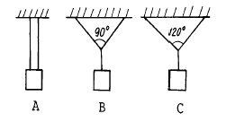
- B > A > C
- C > A > B
- A > B > C
- C > B > A
(정답률: 65%)

2. 휨을 받는 부재에서 휨 모멘트 M과 하중강도 Wx의 관계로 옳은 것은?
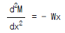
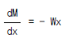
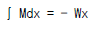
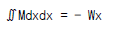
(정답률: 36%)
3. 다음 그림과 같은 보에서 B 지점의 반력이 2P가 되기 위해서
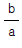
는 얼마가 되어야 하는가?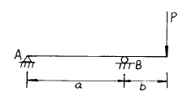
- 0.75
- 1.00
- 1.25
- 1.50
(정답률: 50%)
4. 단면이 20㎝ × 30㎝ 이고, 경간이 5m 인 단순보의 중앙에 집중하중 1.68tonf 이 작용할 때의 최대 휨응력은?
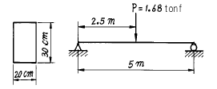
- 50 ㎏f/cm2
- 70 ㎏f/cm2
- 90 ㎏f/cm2
- 120 ㎏f/cm2
(정답률: 34%)
5. 다음 그림과 같은 정사각형 미소단면에 응력이 작용할 때 최대 주응력은 얼마인가? (단, σx = 400㎏f/cm2, σy = 800㎏f/cm2, τxy = τyx = 100㎏f/cm2 )
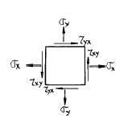
- 647.2 ㎏f/cm2
- 823.6 ㎏f/cm2
- 1625.6 ㎏f/cm2
- 1783.2 ㎏f/cm2
(정답률: 50%)
6. 15cm× 25cm 의 직사각형 단면을 가진 길이 4.5m 인 양단 힌지 기둥이 있다. 세장비 λ 는?
- 62.4
- 124.7
- 100.1
- 103.9
(정답률: 44%)
7. 그림의 라멘에서 수평반력 H를 구한 값은?
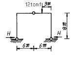
- 9.0 tonf
- 4.5 tonf
- 3.0 tonf
- 2.25 tonf
(정답률: 40%)
8. 그림과 같은 외팔보가 있다. 보는 탄성계수가 E인 재료로 되어 있고, 단면은 전길이에 걸쳐 일정하며 단면 2차 모멘트는 I 이다. 그림과 같이 하중을 받고 있을 때 C 점의 처짐각은 B 점의 처짐각보다 얼마나 큰가?
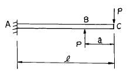
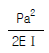
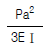
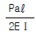
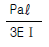
(정답률: 37%)
9. 폭이 20cm, 높이 30cm 인 직사각형 단면의 단순보에서 최대 휨모멘트가 2tonf· m 일 때 처짐곡선의 곡률반지름 크기는?(단, E = 100000 ㎏f/cm2)
- 4500 m
- 450 m
- 2250 m
- 225 m
(정답률: 60%)
10. 다음과 같은 보의 A점의 수직반력 VA는?
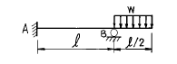
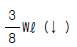
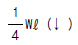
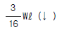
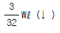
(정답률: 58%)
11. 그림과 같은 라멘 구조물의 E점에서의 불균형 모멘트에 대한 부재 AE의 모멘트 분배율은?
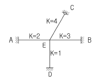
- 0.222
- 0.1667
- 0.2857
- 0.40
(정답률: 79%)
12. 다음 도형의 도심축에 관한 단면2차 모멘트를 Ig, 밑변을 지나는 축에 관한 단면2차 모멘트를 Ix 라 하면 Ix/Ig 값은?
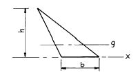
- 2
- 3
- 4
- 5
(정답률: 45%)
13. 탄성계수 E = 2.1×106kgf/cm2 , 프와송비ν = 0.25일 때 전단탄성계수의 값으로 옳은 것은?
- 8.4×105kgf/cm2
- 10.5×105kgf/cm2
- 16.8×105kgf/cm2
- 21.0×105kgf/cm2
(정답률: 54%)
14. 그림과 같은 구조물에서 AC 강봉의 최소직경D의 크기는? (단, 강봉의 허용응력은 σa = 1,400kgf/cm2 이다.)
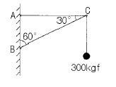
- 4 mm
- 7 mm
- 10 mm
- 12 mm
(정답률: 60%)
15. 그림과 같은 단순보의 지점 B에 모멘트 M이 작용할 때 보에 최대처짐(δmax)과 δmax가 발생하는 위치 x는? (단, EI는 일정하다.)
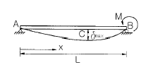
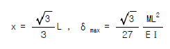
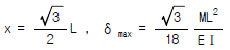
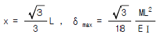
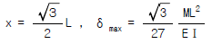
(정답률: 14%)
16. 그림과 같은 내민보에서 자유단 C 점의 처짐이 0 이 되기위한 P/Q는 얼마인가? (단, EI는 일정하다)
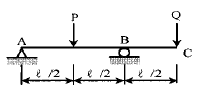
- 3
- 4
- 5
- 6
(정답률: 48%)
17. 그림과 같은 단면에서 직사각형 단면의 최대 전단응력도는 원형단면의 최대 전단응력도의 몇 배인가? (단, 두단면적과 작용하는 전단력의 크기는 같다.)
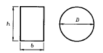
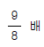
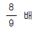
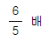
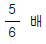
(정답률: 알수없음)
18. 다음 인장부재의 수직변위를 구하는 식으로 옳은 것은? (단, 탄성계수는 E)
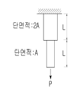
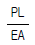
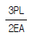
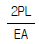
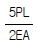
(정답률: 50%)
19. 다음 트러스의 절점 b 에 부재 ab 와 평행인 방향으로 하중 P=10 tonf 가 작용할 때 부재 cd 의 단면력은?
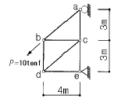
- 0
- 5 tonf (압축)
- 5 tonf (인장)
- 10 tonf (압축)
(정답률: 44%)
20. 기둥에 관한 다음 설명 중 잘못된 것은?
- 장주(long column)라 함은 길이가 긴 기둥을 말한다.
- 단주(short column)는 좌굴이 발생하기 전에 재료의 압축파괴가 먼저 일어난다.
- 동일한 단면, 길이 및 재료를 사용한 기둥의 경우에도 기둥 단부의 구속조건에 따라 기둥의 거동특성이 달라질 수 있다.
- 편심하중이 재하된 장주의 하중-변위(p-δ ) 관계식은 처음부터 비선형으로 된다.
(정답률: 0%)
2과목: 측량학
21. 어떤 거리를 같은 정확도로 8회 측정하여 ± 8.0㎝의 평균제곱근 오차를 얻었다. 지금 평균제곱근 오차를 ± 6.0㎝이내로 얻기 위해서는 몇회 측정하여야 하는가?
- 6회
- 9회
- 12회
- 15회
(정답률: 20%)
22. 토적곡선(Mass Curve)을 작성하는 목적 중 그 중요도가 가장 작은 것은?
- 토량의 운반거리 산출
- 토공기계의 선정
- 교통량 산정
- 토량의 배분
(정답률: 56%)
23. 기지점 A에 평판을 세우고 B점에 수직으로 목표판을 세우고 시준하여 눈금 12.4 와 9.3을 얻었다. 목표판 실제의 상하간격이 2m 일 때 AB 두 지점의 거리는?
- 32.2m
- 64.5m
- 96.8m
- 21.5m
(정답률: 34%)
24. 고저측량에서 발생하는 오차에 대한 설명 중에서 틀린 것은?
- 기계의 조정에 의해 발생하는 오차는 전시와 후시의 거리를 같게 하여 소거 할 수 있다.
- 표척의 영눈금의 오차는 출발점의 표척을 도착점에서 사용하여 소거한다.
- 대지삼각고저측량에서 곡률오차와 굴절오차는 그 양이 미소하므로 무시할 수 있다.
- 기포의 수평조정이나 표척면의 읽기는 육안으로 한계가 있으나 이로 인한 오차는 일반적으로 허용오차 범위안에 들 수 있다.
(정답률: 알수없음)
25. 눈의 높이가 1.7m이고 빛의 굴절 계수가 0.15일 때 해변에서 바라볼수 있는 수평선까지의 최대 거리는? (단, 지구 반경은 6,370km로 함)
- 5.⑤km
- 4.25km
- 4.⑤km
- 3.55km
(정답률: 27%)
26. 다음 중 내부표정에 의해 처리할 수 있는 사항은?
- 축척결정
- 수준면 결정
- 주점거리 조정
- 종시차 소거
(정답률: 15%)
27. 지표상의 임의점에서 지구 중력방향으로 수준면에 이르는 수직거리와 관계가 있는 용어는?
- 수평면
- 높이
- 표고
- 지평선
(정답률: 50%)
28. 3대회(三對回)의 방향관측법으로 수평각을 관측할 때 트랜싯(transit) 수평분도반(水平分度盤)의 위치는?
- 0° , 45° , 90°
- 0° , 60° , 120°
- 0° , 90° , 180°
- 0° , 180° , 270°
(정답률: 17%)
29. 축척 1/1,500 지도상의 면적을 잘못하여 축척 1/1,000로 측정하였더니 10,000m2 가 나왔다. 실제면적은?
- 17,600m2
- 18,700m2
- 22,500m2
- 24,300m2
(정답률: 60%)
30. 다음과 같은 단면에서 절토단면적은 얼마인가?
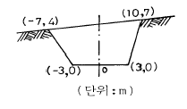
- 141m2
- 161m2
- 61m2
- 67m2
(정답률: 39%)
31. B.C의 위치가 NO.12 + 16.404m 이고 E.C의 위치가 NO.19+ 13.52m 일 때 시단현과 종단현에 대한 편각은? (단, 곡선반경은 200m, 중심말뚝의 간격은 20m, 시단현에 대한 편각은 δ1, 종단현에 대한 편각은 δ2 임)
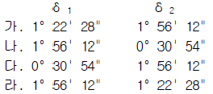
- 가
- 나
- 다.
- 라
(정답률: 54%)
32. 항공사진상에 굴뚝의 윗부분이 주점으로부터 80mm 떨어져 나타났라며 굴뚝의 길이는 10mm이었다. 실제 굴뚝의 높이 가 70m라면 이 사진은 촬영고도 얼마에서 촬영된 것인가?
- 490m
- 560m
- 630m
- 700m
(정답률: 57%)
33. 측지학에 대한 설명 중 옳지 않은 것은?
- 물리학적 측지학은 지구내부의 특성, 지구의 형상 및 운동을 결정하는 것이다.
- 기하학적 측지학은 지구표면상에 있는 점들간의 상호 위치관계를 결정하는 것이다.
- 탄성파 측정에서 지표면으로부터 낮은 곳은 굴절법을 이용한다.
- 중력측정에서 중력은 관측한 곳의 표고와는 관계없이 행하여 진다.
(정답률: 40%)
34. 다음은 클로소이드 곡선에 대한 설명이다. 틀린 것은?
- 곡률이 곡선의 길이에 비례하는 곡선이다.
- 단위클로소이드란 매개변수 A가 1인 클로소이드이다.
- 클로소이드는 닮음 꼴인 것과 닮음 꼴이 아닌 것 두가지가 있다.
- 클로소이드에서 매개변수 A가 정해지면 클로소이드의 크기가 정해진다.
(정답률: 27%)
35. 다음은 삼각점 성과표에 대한 내용을 설명한 것이다. 이중 틀린 것은?
- 평면직교좌표는 X, Y로 표시하며 X축은 남북거리, Y축은 동서거리이다.
- 평균거리는 대수로 주어져 있으며, 평면상의 거리는 축척계수를 고려하여 계산한다.
- 삼각점의 등급, 번호, 명칭이 주어져 있다.
- 삼각점의 표고는 직접수준측량에 의한 결과값이다.
(정답률: 16%)
36. 하천측량을 행할 때 평면측량의 일반적인 범위 및 거리에 대한 설명 중 옳지 않은 것은?
- 유제부에서의 측량범위는 제내지 300m 이내로 한다.
- 무제부에서의 측량범위는 평상시 물이 차는 곳까지로 한다.
- 선박운행을 위한 하천개수가 목적일 때 하류는 하구 까지로 한다.
- 홍수방지공사가 목적인 하천공사에서는 하구에서부터 상류의 홍수피해가 미치는 지점까지로 한다.
(정답률: 알수없음)
37. 단곡선을 설치하기 위하여 교각 I = 90° , 외선길이(E)는 10m 로 결정하였을 때 곡선길이(C.L.)는 얼마인가?
- 37.9m
- 39.7m
- 40.8m
- 41.2m
(정답률: 50%)
38. 우리나라의 노선측량에서 철도에 주로 이용되는 완화곡선 은?
- 1차 포물선
- 3차 포물선
- 렘니스케이트(lemniscate)
- 클로소이드(clothoid)
(정답률: 알수없음)
39. 1/25,000 지형도상에서 거리가 6.73㎝인 두 점 사이의 거리를 다른 축척의 지형도에서 측정한 결과 11.21㎝ 이었다. 이 지형도의 축척은 약 얼마인가?
- 1/20,000
- 1/18,000
- 1/15,000
- 1/13,000
(정답률: 39%)
40. 다음의 전자기파거리측량기에 관한 사항중 옳지 않은 것은?
- 초장기선간섭계(VLBI)는 1,000km∼10,000km 떨어진 지구상의 지점간을 관측할 수 있는 것으로 1m이내의 정도를 유지할 수 있다.
- 정도에 있어서 광파거리측량기가 전파거리측량기는 보다 우수하다.
- 광파거리측량기가 전파거리측량기보다 기상조건의 영향이 적다.
- 전자파거리측량기의 오차는 모두 주파수 및 굴절율에 관한 영향을 많이 받는다.
(정답률: 39%)
3과목: 수리학 및 수문학
41. 다음 중 마찰손실계수에 대하여 설명한 것중 틀린 것은?
- 완전조면 영역에서는 상대조도만의 함수이다.
- 레이놀즈수에 따라 변한다.
- 마찰손실 계수는 유속과는 상관이 없다.
- 상대조도에 따라 변한다.
(정답률: 32%)
42. 두께 20m의 피압 대수층으로부터 6.28m3/s의 양수율로 양수했을 때 평형상태에 도달하였다. 이 양수정으로부터 50m, 200m 떨어진 관측정에서의 지하수위가 각각 39.20m, 39.66m라면 이 대수층의 투수계수는?
- 0.0065m/s
- 0.0654m/s
- 0.0150m/s
- 0.1506m/s
(정답률: 24%)
43. 에너지 방정식과 운동량 방정식에 관한 설명으로 옳은 것은?
- 두 방정식은 모두 속도항을 포함한 벡터로 표시된다.
- 에너지 방정식은 내부 손실 항을 포함하지 않는다.
- 운동량 방정식은 외부 저항력을 포함한다.
- 내부에너지 손실이 큰 경우에 운동량 방정식은 적용 될수 없다.
(정답률: 7%)
44. 사이폰(syphon)에 관한 사항중 옳지 않은 것은?
- 관수로의 일부가 동수경사선보다 높은 곳을 통과하는 것을 말한다.
- 사이폰 내에서는 부압(負壓)이 생기는 곳이 있다.
- 수로(水路)가 하천이나 철도를 횡단할 때도 이것을 설치한다.
- 사이폰의 정점과 동수경사선과의 고저차는 8.0m이하로 설계하는 것이 보통이다.
(정답률: 알수없음)
45. 수면에서 깊이 2.5m에 정사각형단면의 오리피스를 설치하여 0.042m3/s의 물을 유출시킬 때 정사각형단면에서 한변의 길이는? (단, 유량계수는 0.6이다.)
- 10.0cm
- 14.0cm
- 18.0cm
- 22.0cm
(정답률: 75%)
46. 어떤 유역에 내린 호우사상의 시간적 분포가 다음과 같고 유역의 출구에서 측정한 지표유출량이 15mm일 때 φ-지표는?
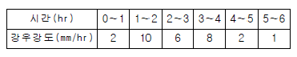
- 2mm/hr
- 3mm/hr
- 5mm/hr
- 7mm/hr
(정답률: 22%)
47. 물의 단위중량 W = ρ · g, 수심 h, 하상(河床)경사 I라고 할 때 유수의 소류력(掃流力) τo는? (단, ρ : 물의 밀도, g : 중력가속도)
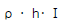
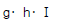
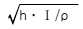
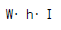
(정답률: 28%)
48. 다음 중 장기간에 걸친 강수자료의 일관성(一貫性)에 대한 검사 및 교정하는 방법으로 알맞은 것은?
- 선행 강수 지수법(API)
- 순간 단위 유량도법(IUH)
- 등우선법(Isohyetal method)
- 이중 누가 우량 분석법(Double mass analysis)
(정답률: 69%)
49. 수평으로 위치한 노즐로부터 물이 분출되고 있다. 직경이 4㎝, 압력이 8.0kg/cm2 인 노즐에 작용하는 힘은?
- 0.201ton
- 0.402ton
- 2.01ton
- 4.02ton
(정답률: 10%)
50. 그림과 같은 원형수문이 받는 단위 폭당의 전수압은?
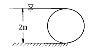
- 2.54ton
- 4.25ton
- 6.36ton
- 9.53ton
(정답률: 17%)
51. 공학단위로 동점성계수의 차원은?
- [FL-2T]
- [L2T-1]
- [FL-4T-2]
- [FL2]
(정답률: 53%)
52. 다음은 개수로 흐름에 대한 성질을 표시한 것이다. 틀린 것은 어느 것인가?
- 도수 중에는 반드시 에너지 손실이 일어난다.
- 홍수시 저수지의 배수곡선(背水曲線)은 월류댐의 월류수심과는 무관하다.
- Escoffier의 도해법은 부등단면 개수로의 수면형을 구하는 방법이다.
- 개수로에서 단파(段波)현상은 수류의 운동량과 관계가 있다.
(정답률: 37%)
53. 그림과 같이 폭이 4m인 수문이 d=2m 만큼 열려있을 때 상류수심 h1=4m, 하류수심 h2=3m, 유량계수 C=0.6이면 수문을 통하는 유량은?
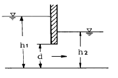
- 21.25m3/s
- 31.25m3/s
- 41.25m3/s
- 11.25m3/s
(정답률: 29%)
54. 시간을 t, 유속을 v, 두 단면간의 거리를 ℓ 이라 할 때 다음 조건 중 부등류인 경우는?
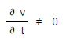
(정답률: 56%)
55. 내경 10cm의 연직관 속에 높이 1m 만큼 모래가 들어있다. 사면(砂面) 위의 수위를 30cm로 일정하게 유지하여 투수량을 측정하였더니 3ℓ /hr 였다. 이 모래의 투수계수는 얼마인가?
- 0.0082cm/s
- 0.082cm/s
- 0.82cm/s
- 8.2cm/s
(정답률: 0%)
56. 침투능에 관한 설명 중 틀린 것은?
- 어떤 토양면을 통해 물이 침투할 수 있는 최대율을 말한다.
- 단위는 통상 ㎜/hr 또는 in/hr로 표시된다.
- 침투능은 강우강도에 따라 변화한다.
- 침투능은 토양조건과는 무관하다.
(정답률: 54%)
57. 극히 짧은 시간 사이에 유체가 어떤 면에 충돌하여 발생되는 반작용의 힘을 구하는 식은?
- 연속 방정식
- 토리첼리 정리
- 베루누이 방정식
- 운동량 방정식
(정답률: 24%)
58. 다음 중 DAD 해석시 가장 불필요한 것은?
- 자기우량 기록지
- 구적기
- 최대 강우량 기록
- 상대 습도
(정답률: 29%)
59. 유속 3m/s로 매초 100ℓ 의 물이 흐르게 하는데 필요한 관의 내경으로 알맞은 것은?
- 206㎜
- 312㎜
- 153㎜
- 265㎜
(정답률: 20%)
60. 소도시 재현기간 10년의 강우강도식이 , 유출계수가 0.45, 유역면적이 2㎢, 우수의 도달시간이 40분이라하면 합리식에 의한 설계유량은?
- 19.4m3/s
- 17.5m3/s
- 15.5m3/s
- 13.5m3/s
(정답률: 47%)
4과목: 철근콘크리트 및 강구조
61. 철근콘크리트 강도설계에 있어서 안전을 위한 강도감소계수 φ의 규정값으로 틀린 것은?(오류 신고가 접수된 문제입니다. 반드시 정답과 해설을 확인하시기 바랍니다.)
- 축인장력 : 0.85
- 무근콘크리트 휨모멘트 : 0.65
- 나선철근으로 보강된 철근콘크리트 부재 : 0.75
- 전단력과 비틀림모멘트 : 0.70
(정답률: 알수없음)
62. 다음 그림과 같은 직사각형 단면의 단순보에 PS강재가 포물선으로 배치되어 있다. 보의 중앙단면에서 일어나는 상·하연의 콘크리트 응력은 얼마인가? (단, PS강재의 긴장력은 330tonf이고 자중을 포함하여 작용하중은 2.7 tonf/m이다.)
- 상 ft = 212.14 kgf/cm2, 하 fb = 18 kgf/cm2
- 상 ft = 120.73 kgf/cm2. 하 fb = 0 kgf/cm2
- 상 ft = 86 kgf/cm2, 하 fb = 24.48 kgf/cm2
- 상 ft = 111.13 kgf/cm2, 하 fb = 30.⑤ kgf/cm2
(정답률: 41%)
63. 다음 그림의 철근 콘크리트 사각형 확대기초에 생기는 지반 반력의 크기는? (단, 폭은 1m 이다.)
- Qmin: 6.3t/m2, Qmax: 23.3t/m2
- Qmin: 3.3t/m2, Qmax: 27.3t/m2
- Qmin: 6.3t/m2, Qmax: 27.3t/m2
- Qmin: 3.3t/m2, Qmax: 23.3tm22
(정답률: 20%)
64. 필렛 용접한 이음부에 외력 P(인장력, 압축력 또는 전단력)가 작용할 때 용접부의 응력검토를 위한 응력 계산식은? (단, a:용접의 목의 두께, ℓ :용접의 유효길이)
- ℓ P/Σ a
- ℓ /Σ pa
- P/Σ aℓ
- ℓ /Σ p
(정답률: 39%)
65. 철근의 항복응력인 fy에 해당하는 응력을 가해 인장시험을 실시하여 변형률이 0.003 이하가 되면 fy를 그대로 사용할 수 있는데 이 때 최대로 사용할 수 있는 철근의 설계기준항복 강도는 얼마인가?
- 4,500 kgf/cm2
- 4,800 kgf/cm2
- 5,000 kgf/cm2
- 5,500 kgf/cm2
(정답률: 9%)
66. 단면 40 × 50cm이고 1.5cm2의 PSC강선 4개를 단면 도심축에 배치한 프리텐션 PSC부재가 있다. 초기 프리스트레스 10,000kgf/cm2일 때 콘크리트의 탄성변형에 의한 프리스 트레스 감소량의 값은? (단, n = 6)
- 220kgf/cm2
- 200kgf/cm2
- 180kgf/cm2
- 160kgf/cm2
(정답률: 24%)
67. 그림과 같이 긴장재를 포물선으로 배치하고, P = 250tonf으로 긴장했을 때 발생하는 등분포 상향력을 등가하중의 개념으로 구한 값은?
- 1.0 tonf/m
- 1.5 tonf/m
- 2.0 tonf/m
- 2.5 tonf/m
(정답률: 18%)
68. 그림과 같은 1-PL180 × 10의 강판에 φ25㎜ 볼트로 이을때 강판의 최대 허용 인장력(㎏f)은? (단, fta = 1,300 ㎏f/cm2)
- 16,020 ㎏f
- 16,220 ㎏f
- 16,320 ㎏f
- 16,120 ㎏f
(정답률: 8%)
69. 기둥에 관한 구조세목 중 틀린 것은?
- 띠철근 기둥단면의 최소치수는 20cm이상, 단면적은 600cm2이상이어야 한다.
- 나선철근 단면 심부의 지름은 20cm 이상이고, 콘크리트 설계기준강도는 180kgf/cm2이상이어야 한다.
- 띠철근의 수직간격은 종방향 철근지름의 16배 이하,띠철근지름의 48배이하, 또한 기둥단면의 최소치수이하로 하여야 한다.
- 나선철근의 순간격은 2.5cm이상 7.5cm이하 이어야하고, 정착을 위하여 나선철근 끝에서 1.5회전 만큼 더 연장한다.
(정답률: 25%)
70. 콘크리트 속에 묻혀 있는 철근이 콘크리트와 일체가 되어 외력에 저항할 수 있는 이유로 적합하지 않은 것은?
- 철근과 콘크리트 사이의 부착강도가 크다.
- 철근과 콘크리트의 열팽창계수가 거의 같다.
- 콘크리트 속에 묻힌 철근은 부식하지 않는다.
- 철근과 콘크리트의 탄성계수가 거의 같다.
(정답률: 50%)
71. 장주의 좌굴하중(임계하중)은 Euler 공식으로부터 이다. 기둥의 양단이 Hinge일 때 이론적인 K의 값은 얼마인가?
- 0.5
- 0.7
- 1.0
- 2.0
(정답률: 14%)
72. 강도설계법에서 스터럽의 간격은 다음 중 어느 것에 반비례 하는가?
- 스터럽의 단면적
- 철근의 항복강도
- 보의 유효깊이
- 스터럽이 부담해야 할 전단력
(정답률: 31%)
73. 복철근 콘크리트 단면에 압축철근비 ρ ' = 0.01이 배근된 경우 순간처짐이 2cm일 때 1년이 지난 후 처짐량은? (단, 작용하는 모든 하중은 지속하중으로 보며 지속하중의 1년 재하기간에 따르는 계수 ξ는 1.4 이다.)
- 4.22cm
- 4.00cm
- 3.87cm
- 3.99cm
(정답률: 42%)
74. 캔틸레버 옹벽(역 T형 옹벽)에서 뒷굽판의 길이를 결정할때 가장 주가 되는 것은?
- 전도에 대한 안정
- 활동에 대한 안정
- 지반 지지력에 대한 안정
- 침하에 대한 안정
(정답률: 16%)
75. 다음 주어진 단철근 직사각형 단면이 연성파괴를 한다면이 단면의 공칭휨강도는 얼마인가? (단, fck=210㎏f/cm2, fy=3,000㎏f/)
- 25.24tonf· m
- 29.69tonf· m
- 35.63tonf· m
- 39.69tonf· m
(정답률: 43%)
76. 전단설계 시에 깊은 보(deep beam)란 부재의 상부 또는 압축면에 하중이 작용하는 부재로 ℓn/d이 최대 얼마보다 작은 경우인가? (단, ℓn받침부 내면 사이의 순경간, d:종방향 인장철근의 중심에서 압축측 연단까지의 거리)
- 3
- 4
- 5
- 6
(정답률: 17%)
77. 철근콘크리트 부재의 강도설계법 개념에 대한 설명중 옳지 않은 것은?
- 설계 기본개념이 응력개념 위주가 아니라 강도개념 위주의 설계법이다.
- 항복강도 fy 이하에서의 철근의 응력은 그 변형률의 Es배로 한다.
- 콘크리트의 압축응력 분포도는 사각형, 사다리꼴, 포물선 기타 어느 형상이든지 가정할 수 있다.
- 콘크리트의 응력은 중립축으로부터 떨어진 거리에 비례한다.
(정답률: 11%)
78. b = 30㎝, d = 46㎝, As = 6-D32(47.65cm2), As'=2-D29(12.84cm2), d'= 6㎝인 복철근 직사각형 단면에서 파괴시 압축철근이 항복하는 경우 인장철근의 최대철근비 (ρmax)를 구하면? (단, fck = 350 kgf/cm2, fy = 3,500kgf/cm2 )
- 0.03⑤
- 0.0352
- 0.0416
- 0.0437
(정답률: 14%)
79. 인장 이형철근을 겹침이음할 때(배근 As/소요As)＜2.0 이 고 겹침이음된 철근량이 전체 철근량의 1/2을 넘는 경우 겹침이음 길이는?(단, ℓd: 규정에 의해 계산된 이형철 근의 정착길이)
- 1.0 ℓ d이상
- 1.3 ℓ d이상
- 1.5 ℓ d이상
- 1.7 ℓ d이상
(정답률: 44%)
80. fck = 280㎏f/cm2, fy = 3,500㎏f/cm2로 만들어지는 보에서 압축 이형철근으로 D29(공칭지름 2.86㎝)를 사용한다면 기본정착길이로 가장 적당한 것은?
- 40㎝
- 44㎝
- 48㎝
- 52㎝
(정답률: 알수없음)
5과목: 토질 및 기초
81. 어느 모래층의 간극률이 0.35, 비중이 2.66이다. 이 모래의 Quick Sand에 대한 한계동수구배는 얼마인가?
- 1.14
- 1.08
- 1.0
- 0.99
(정답률: 39%)
82. 다음 그림은 흙의 종류에 따른 전단강도를 τ -σ 평면에 도시한 것이다. 설명이 잘못된 것은?
- A는 포화된 점성토 지반의 전단강도를 나타낸 것이다.
- B는 모래등 사질토에 대한 전단강도를 나타낸 것이다.
- C는 일반적인 흙의 전단강도를 도시한 것이다.
- D는 정규 압밀된 흙의 전단강도를 나타낸 것이다.
(정답률: 50%)
83. 어떤 흙시료의 비중이 2.50 이고, 흙 중의 물의 무게가 100g 이며, 순 흙입자의 부피가 200cm3 일 때 이 시료의 함수비는 얼마인가?
- 10%
- 20%
- 30%
- 40%
(정답률: 40%)
84. 모래시료에 대해서 압밀배수 삼축압축시험을 실시하였다. 초기 단계에서 구속응력(σ3)은 100㎏/cm2이고, 전단파괴시에 작용된 축차응력(σdf)은 200㎏/cm2이었다. 이와 같은 모래시료의 내부마찰각(φ) 및 파괴면에 작용하는 전단응력(τf)의 크기는?
- φ = 30° , τf = 115.47㎏/cm2
- φ = 40° , τf = 115.47㎏cm2
- φ = 30° , τf = 86.60㎏/cm2
- φ = 40° , τf = 86.60㎏cm2
(정답률: 34%)
85. 그림과 같이 3층으로 되어 있는 성층토의 수평방향의 평균투수계수는?
- 2.97×10-4cm/sec
- 3.04×10-4cm/sec
- 6.04×10-4cm/sec
- 4.04×10-4cm/sec
(정답률: 39%)
86. 전체 시추코아 길이가 150cm 이고 이중 회수된 코아 길이의 합이 80cm 이었으며, 10cm 이상인 코아 길이의 합이 70cm 였을 때 암질의 상태는?
- 매우불량(Very Poor)
- 불량(Poor)
- 보통(Fair)
- 양호(Good)
(정답률: 15%)
87. 어떤 흙의 입경가적곡선에서 D10=0.⑤mm, D30=0.09mm, D60=0.15mm이었다. 균등계수 Cu와 곡률계수 Cg의 값은?
- Cu=3.0, Cg=1.08
- Cu=3.5, Cg=2.08
- Cu=1.7, Cg=2.45
- Cu=2.4, Cg=1.82
(정답률: 알수없음)
88. 사면파괴가 일어날 수 있는 원인에 대한 설명중 적절하지 못한 것은?
- 흙중의 수분의 증가
- 굴착에 따른 구속력의 감소
- 과잉 간극수압의 감소
- 지진에 의한 수평방향력의 증가
(정답률: 42%)
89. 표준관입시험(SPT)을 할 때 처음 15㎝ 관입에 요하는 N값은 제외하고, 그 후 30㎝ 관입에 요하는 타격수로 N값을 구한다. 그 이유로 가장 타당한 것은?
- 정확히 30㎝를 관입시키기가 어려워서 15㎝ 관입에 요하는 N값을 제외한다.
- 보링구멍 밑면 흙이 보링에 의하여 흐트러져 15㎝관입후부터 N값을 측정한다.
- 관입봉의 길이가 정확히 45㎝이므로 이에 맞도록 관입시키기 위함이다.
- 흙은 보통 15㎝ 밑부터 그 흙의 성질을 가장 잘 나타낸다.
(정답률: 50%)
90. 다음의 연약지반개량공법에서 일시적인 개량공법은 어느 것인가?
- well point 공법
- 치환공법
- paper drain 공법
- sand drain 공법
(정답률: 50%)
91. C=0, φ=30° , γt=1.8t/m3인 사질토 지반위에 근입깊이 1.5m의 정방형 기초가 놓여있다. 이 때 이 기초의 도심에 150t의 하중이 작용하고 지하수위 영향은 없다고 본다. 이 기초의 가장 경제적인 폭 B의 값은? (단, Terzaghi의 지지력공식을 이용하고 안전율은 Fs =3, 형상계수 α =1.3, β =0.4, φ=30° 일때 지지력계수는 Nc=37, Nq=23, Nr=20 이다.)
- 3.8m
- 3.4m
- 2.9m
- 2.2m
(정답률: 20%)
92. 점착력이 0.1㎏/㎝2,내부마찰각이 30° 인 흙에 수직응력 20㎏/cm2을 가할 경우 전단응력은?
- 20.1㎏/cm2
- 6.76㎏/cm2
- 1.16㎏cm2
- 11.65㎏/cm2
(정답률: 알수없음)
93. 말뚝에 관한 다음 설명 중 옳은 것은?
- 말뚝에 부(負)의 주면마찰력이 일어나면 지지력은 증가한다.
- 무리말뚝(群抗)에 있어서 각 개의 말뚝이 발휘하는 지지력은 단독말뚝보다 크다.
- 정역학적 지지력 공식에 의하면 지지력은 선단저항력과 주면마찰력의 합과 같다.
- 일반적으로 지반조건으로 보아 말뚝끝이 암반에 도달하면 마찰지지말뚝, 연약점성토에 도달하면 선단지지 말뚝으로 구분한다.
(정답률: 18%)
94. 그림과 같은 옹벽에 작용하는 전주동 토압은? (단, 뒷채움 흙의 단위중량은 1.8t/m3, 내부마찰각은 30° 이고, Rankine의 토압론을 적용한다.)
- 7.5 t/m
- 8.5 t/m
- 9.5 t/m
- 10.5 t/m
(정답률: 50%)
95. 비중이 2.67, 함수비 35%이며, 두께 10m인 포화점토층이 압밀후에 함수비가 25%로 되었다면, 이 토층 높이의 변화량은 얼마인가?
- 113㎝
- 128㎝
- 135㎝
- 155㎝
(정답률: 27%)
96. 아래 그림에서 투수계수 K=4.8× 10-3㎝/sec 일 때 Darcy 유출속도 v 와 실제 물의 속도(침투속도)vs는?
- v =3.4× 10-4㎝/sec vs=5.6× 10-4㎝/sec
- v =3.4× 10-4㎝/sec vs=9.4× 10-4㎝/sec
- v =5.8× 10-4㎝/sec vs=10.8× 10-4㎝/sec
- v =5.8× 10-4㎝/sec vs=13.2× 10-4㎝/sec
(정답률: 65%)
97. 흙시료 채취에 관한 설명 중 옳지 않은 것은?
- Post Hole형의 Auger는 비교적 연약한 흙을 Boring 하는데 적합하다.
- 비교적 단단한 흙에는 Screw형의 Auger가 적합하다.
- Auger Boring은 흐트러지지 않은 시료를 채취 하는데 적합하다.
- 깊은 토층에서 시료를 채취 할때는 보통 기계 Boring을 한다.
(정답률: 50%)
98. 흙의 다짐곡선은 흙의 종류나 입도 및 다짐에너지 등의 영향으로 변한다. 그 일반적 다짐곡선 변화내용과 부합되지 않는 것은?
- 세립토가 많을수록 최적함수비는 증가한다.
- 최대건조단위중량이 큰 흙일수록 최적함수비는 큰것이 보통이다.
- 점토질 흙은 최대건조단위중량이 작고 사질토는 크다
- 다짐에너지가 클수록 최적함수비는 감소한다.
(정답률: 55%)
99. 단면배수를 실시한 압밀점토 시료의 두께가 2cm이었다. 임의 하중 증가에 의하여 50%압밀에 소요된 시간이 20분 20초이었다고 할 때 두께가 2m인 양면 배수 현장 점토층의 50%압밀에 소요되는 시간은 약 며칠인가?(오류 신고가 접수된 문제입니다. 반드시 정답과 해설을 확인하시기 바랍니다.)
- 35일
- 141일
- 250일
- 560일
(정답률: 7%)
100. 지름 d = 20㎝인 나무말뚝을 25본 박아서 기초 상판을 지지하고 있다. 말뚝의 배치를 5열로 하고 각열은 등간격으로 5본씩 박혀있다. 말뚝의 중심간격 S = 1m이고 1본의 말뚝이 단독으로 10t의 지지력을 가졌다고 하면 이 무리 말뚝은 전체로 얼마의 하중을 견딜수 있는가? (단, Converse - Labbarre식을 사용한다. )
- 100t
- 200t
- 300t
- 400t
(정답률: 38%)
6과목: 상하수도공학
101. 침전에 관한 Stocke's의 법칙에 대한 설명으로 잘못된 것은?
- 침강속도는 입자와 액체의 밀도차에 비례한다.
- 침강속도는 겨울철이 여름철보다 크다.
- 침강속도는 입자의 크기가 클수록 크다.
- 침강속도는 중력가속도에 비례한다.
(정답률: 47%)
102. 오수가 하수관거로 유입되는 시간이 4분, 하수관거에서의 유하시간이 8분이다. 이 유역의 유역 면적이 0.5㎢, 강우강도식이 일 때 하수관거의 유량은 얼마인가? (단, 유출계수(C)는 0.56 이다.)
- 52.69 m3/s
- 5.27 m3/s
- 68.28 m3/s
- 6.83 m3/s
(정답률: 60%)
103. 다음 상수의 도수 및 송수에 관한 설명 중 틀린 것은?
- 도수 및 송수방식은 에너지의 공급원 및 지형에 따라 자연유하식과 펌프압송식으로 나누어진다.
- 송수관로는 수리학적으로 수압작용 여부에 따라 개수로식과 관수로식으로 분류 가능하다.
- 펌프압송식은 수원이 급수구역과 가까울 때와 지하수를 수원으로 할 때 적당하다.
- 자연유하식은 평탄한 지형과 도수로가 짧을 때 이용되며, 송수작업이 간편하다.
(정답률: 57%)
104. 관정부식을 예방하기 위한 방법으로 적당하지 않은 것은?
- 관내의 유속증가
- 내부 벽면의 라이닝
- 염소투입
- 매설심도 증가
(정답률: 18%)
1⑤. 하수 배제방식의 특징에 관한 설명중 잘못된 것은?
- 분류식은 합류식에 비해 우수처리 비용이 많이 소요된다.
- 합류식은 분류식에 비해 건설비가 저렴하고 시공이 용이 하다.
- 합류식은 단면적이 크기 때문에 검사, 수리 등에 유리하다.
- 분류식은 오수만을 처리하므로 오수처리 비용이 저렴하다.
(정답률: 9%)
106. 완속여과에 대한 설명 중 옳지 않는 것은?
- 완속여과지의 여과속도는 보통 120m/day로 한다.
- 여과사의 균등계수는 2.0 이하, 유효경은 0.3~0.45mm가 일반적이다.
- 완속여과지의 모래층의 두께는 70~90cm로 한다.
- 완속여과지의 정화기능은 생물여과막의 체분리 작용, 흡착 및 생물산화 등의 작용에 의하여 이루어진다.
(정답률: 30%)
107. 송수관을 닥타일 주철관으로 설계하고자 한다. 평균유속의 최대한도는?
- 1.5m/s
- 3m/s
- 4.5m/s
- 6m/s
(정답률: 0%)
108. 정수시설의 계획정수량은 다음 중 어느 것을 기준으로 하는가?
- 계획 1일 평균급수량
- 계획 1일 최대급수량
- 계획 1일 최저급수량
- 계획 시간 평균급수량
(정답률: 57%)
109. 대장균군(coliform group)이 수질 지표로 이용되는 이유의 설명 중 적합하지 않은 것은?
- 소화기 계통의 전염병균이 대장균군과 같이 존재하기 때문에 적합하다.
- 병원균보다 검출이 용이하고 검출속도가 빠르기 때문에 적합하다.
- 소화기 계통의 전염병균보다 저항력이 조금 약하므로 적합하다.
- 시험이 간편하며 정확성이 보장되므로 적합하다.
(정답률: 알수없음)
110. BOD농도가 800mg/ℓ , 유량 50m3/hr, 하루 배수시간 8hr인 공장 폐수를 0.4kg BOD/m3· day의 부하로 활성슬러지법에 의하여 처리하면 포기조의 부피는 얼마인가?
- 50m3
- 128m3
- 200m3
- 800m3
(정답률: 8%)
111. 다음 취수시설에 관한 설명으로 옳지 않은 것은?
- 취수탑은 최소수심이 2m 이상인 장소에 위치하여야 한다.
- 취수구의 유입속도는 하천에서는 15~30cm/s를 표준으로 한다.
- 집수매거의 집수공에서의 유입속도가 1m/s 이하가 되어야 한다.
- 취수문을 통한 유입속도가 0.8m/s 이하가 되도록 취수문의 크기를 정하여야 한다.
(정답률: 42%)
112. 관경이 변화하는 2개의 하수관거 접합에 대한 설명 중 틀린 것은?
- 수면접합은 유수의 계획수면에 맞추어서 접합하는 방식이다.
- 펌프를 이용한 하수배제시는 관정접합이 유리하다.
- 굴착깊이가 커지는 접합은 관정접합이다.
- 지표경사가 급한 경우에는 단차접합이나 계단접합이 필요하다.
(정답률: 알수없음)
113. 하수처리장 침전지의 수심이 3m 이고, 표면부하율이 36m3/m2· day일 때 침전지에서의 체류시간은?
- 30분
- 1시간
- 2시간
- 3시간
(정답률: 40%)
114. 한 도시의 인구자료가 다음 표와 같을 때 1995년도의 급수 인구를 등비증가법을 이용하여 구하면 몇 명인가?
- 약 12,000명
- 약 24,000명
- 약 36,000명
- 약 48,000명
(정답률: 알수없음)
115. 하수관거내에 황화수소(H2S)가 통상 존재하는 이유는 무엇인가?
- 용존산소로 인해 유황이 산화하기 때문이다.
- 용존산소 결핍으로 박테리아가 메탄가스를 환원 시키기 때문이다.
- 용존산소 결핍으로 박테리아가 황산염을 환원 시키기 때문이다.
- 용존산소로 인해 박테리아가 메탄가스를 환원 시키기 때문이다.
(정답률: 58%)
116. 깊이 3m, 길이 24m인 장방형 약품 침전지 평균수평 유속이 12m/hr 이다. 이 침전지에 침전속도가 1m/hr인 입자가 유입된다면 이 입자의 평균 제거율은 몇 % 가 되겠는가? (단, 기타 침전조 조건은 이상적 침전지를 가정한다.)
- 35%
- 53%
- 67%
- 88%
(정답률: 19%)
117. 슬러지 용적지수(SVI)에 관한 설명 중 옳지 않는 것은?
- 포기조내 혼합물을 30분간 정치한 후 침강한 1g의 슬러지가 차지하는 부피(mℓ )로 나타낸다.
- 정상적으로 운전되는 폭기조의 SVI는 50~150사이이며 100 이하가 바람직하다.
- SVI는 슬러지 밀도지수(SDI)와는 연관성이 없다.
- SVI는 포기시간, BOD농도, 수온 등에 영향을 받는다.
(정답률: 알수없음)
118. 내경 300mm인 급수관에 유량 0.09m3/s이 만수위로 흐르고 있다. 이 급수관의 직선거리 100m에서 생기는 손실수두는? (단, V = 0.84935 C R0.63 I0.54 이고, C = 100으로 가정함)
- 0.61m
- 0.72m
- 0.86m
- 0.97m
(정답률: 22%)
119. 계획구역이 하천에 접하거나 바다에 면해 있는 경우 하수를 신속히 배제할 수 있는 가장 경제적인 배수계통 방식은?
- 집중식(Centralization System)
- 직각식(Rectangular System)
- 선형식(Fan System)
- 방사식(Radial System)
(정답률: 0%)
120. 유역의 가장 먼 곳에 내린 빗물이 유역의 유출구 또는 문제의 지점에 도달하는데 소요되는 시간을 무엇이라고 하는가?
- 도달시간
- 유하시간
- 유입시간
- 지체시간
(정답률: 40%)
A는 물체의 무게와 같은 크기의 힘을 받는 끈이므로 1 kgf입니다.
B는 물체의 무게와 같은 크기의 힘을 받는 끈과 수직 방향으로 작용하는 힘이 합쳐진 결과이므로, 1 kgf보다 큰 값이 됩니다.
C는 물체의 무게와 같은 크기의 힘을 받는 끈과 수평 방향으로 작용하는 힘이 합쳐진 결과이므로, B보다 작은 값이 됩니다.
따라서, C > B > A 순서가 옳습니다.